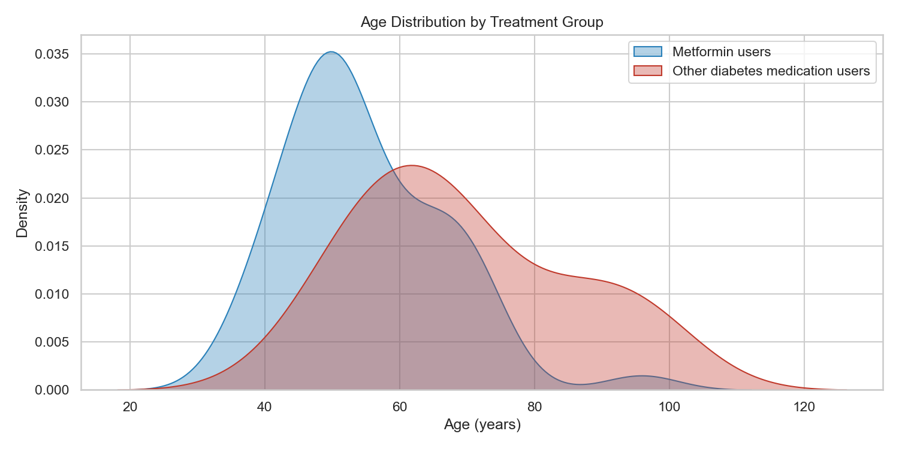
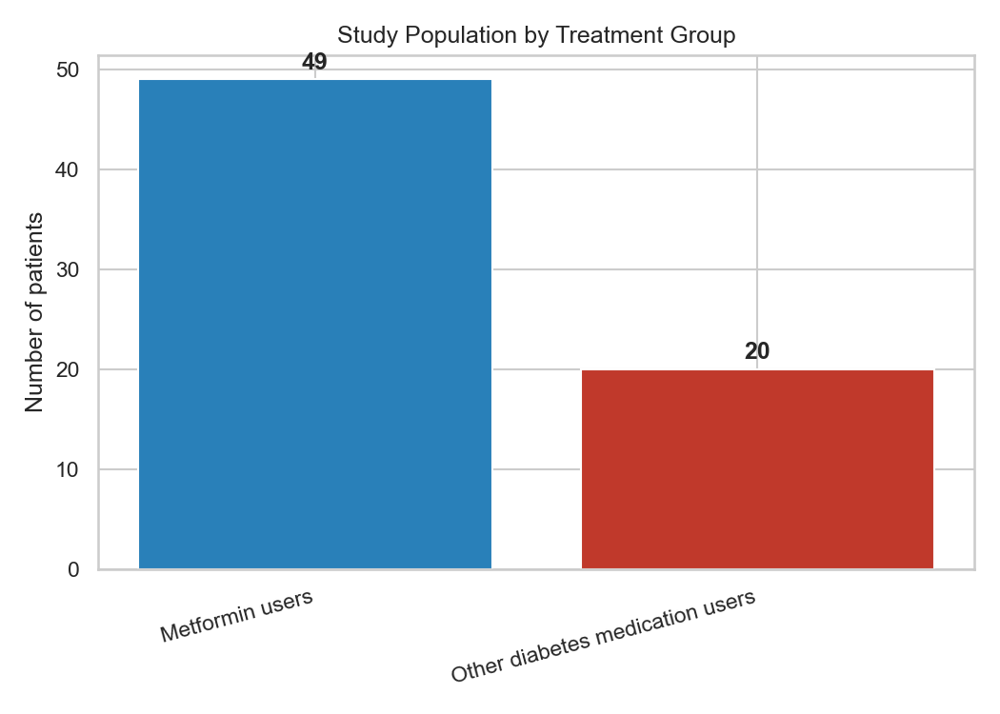
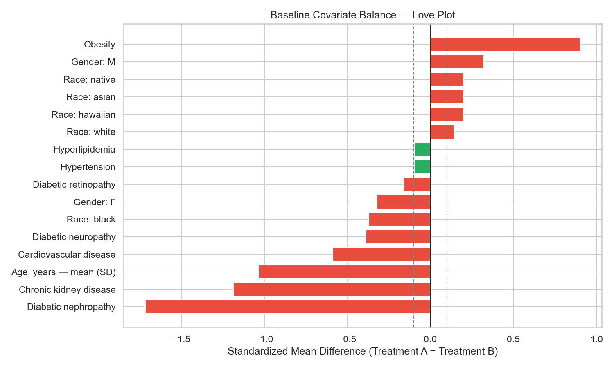

Step 3 — Real-World Evidence Pipeline | Metformin vs Other Diabetes Medications
Study population: Synthea synthetic EHR | N = 69
The analytic cohort comprised 69 adult patients with Type 2 Diabetes initiating pharmacotherapy after diagnosis. Treatment Group A (Metformin users, n=49) and Treatment Group B (Other diabetes medication users, n=20) were compared on baseline demographics and clinical characteristics prior to outcome analysis.
Continuous variables are summarized as mean (SD) and median (IQR). Categorical variables are reported as n (%). Between-group comparisons used Welch's t-test or Mann-Whitney U test (when normality assumptions were not met) for continuous variables, and chi-square or Fisher's exact test for categorical variables.
Standardized mean differences (SMD) quantify baseline imbalance. Of 17 evaluated variables, 3 had |SMD| < 0.1 indicating acceptable balance. Variables with |SMD| ≥ 0.1 suggest residual confounding that should be addressed in propensity score modeling (Step 4).
Imbalanced variables (|SMD| ≥ 0.1): Age, years — mean (SD), Gender: F, Gender: M, Race: asian, Race: black, Race: hawaiian, Race: native, Race: white.
Treatment A: Metformin users | Treatment B: Other diabetes medication users
Significance: * p<0.05, ** p<0.01, *** p<0.001, NS = not significant
| characteristic | Metformin users | Other diabetes medication users | overall | smd | p_value | significance | primary_test |
|---|---|---|---|---|---|---|---|
| N | 49 | 20 | 69 | 0.0 | nan | — | |
| Age, years — mean (SD) | 54.8 (11.8) | 69.4 (16.1) | 59.1 (14.7) | -1.036 | 0.0003 | *** | Mann-Whitney U |
| Age, years — median (IQR) | 51.2 (47.6–63.2) | 66.1 (56.1–81.5) | 55.6 (49.4–66.8) | nan | nan | — | |
| Age, years — min / max | 36.3 / 95.9 | 44.6 / 99.8 | 36.3 / 99.8 | nan | nan | — | |
| Gender: F | 24 (49.0%) | 13 (65.0%) | 37 (53.6%) | -0.322 | 0.3448 | NS | Chi-square |
| Gender: M | 25 (51.0%) | 7 (35.0%) | 32 (46.4%) | 0.322 | nan | — | |
| Race: asian | 1 (2.0%) | 0 (0.0%) | 1 (1.4%) | 0.202 | 0.4631 | NS | Chi-square |
| Race: black | 2 (4.1%) | 3 (15.0%) | 5 (7.2%) | -0.37 | nan | — | |
| Race: hawaiian | 1 (2.0%) | 0 (0.0%) | 1 (1.4%) | 0.202 | nan | — | |
| Race: native | 1 (2.0%) | 0 (0.0%) | 1 (1.4%) | 0.202 | nan | — | |
| Race: white | 44 (89.8%) | 17 (85.0%) | 61 (88.4%) | 0.142 | nan | — |
Comorbidities ascertained from conditions recorded at or before index_date.
| characteristic | Metformin users | Other diabetes medication users | overall | smd | p_value | significance | primary_test |
|---|---|---|---|---|---|---|---|
| Hypertension | 27 (55.1%) | 12 (60.0%) | 39 (56.5%) | -0.097 | 0.9166 | NS | Chi-square / Fisher |
| Hyperlipidemia | 8 (16.3%) | 4 (20.0%) | 12 (17.4%) | -0.094 | 0.7343 | NS | Chi-square / Fisher |
| Obesity | 49 (100.0%) | 14 (70.0%) | 63 (91.3%) | 0.902 | 0.0003 | *** | Chi-square / Fisher |
| Cardiovascular disease | 11 (22.4%) | 10 (50.0%) | 21 (30.4%) | -0.587 | 0.049 | * | Chi-square / Fisher |
| Chronic kidney disease | 7 (14.3%) | 13 (65.0%) | 20 (29.0%) | -1.188 | 0.0001 | *** | Chi-square / Fisher |
| Diabetic nephropathy | 7 (14.3%) | 16 (80.0%) | 23 (33.3%) | -1.716 | 0.0 | *** | Chi-square / Fisher |
| Diabetic neuropathy | 5 (10.2%) | 5 (25.0%) | 10 (14.5%) | -0.388 | 0.1399 | NS | Chi-square / Fisher |
| Diabetic retinopathy | 1 (2.0%) | 1 (5.0%) | 2 (2.9%) | -0.158 | 0.4987 | NS | Chi-square / Fisher |



|SMD| < 0.1 indicates good balance per pharmacoepidemiologic convention. See Love plot for graphical assessment.